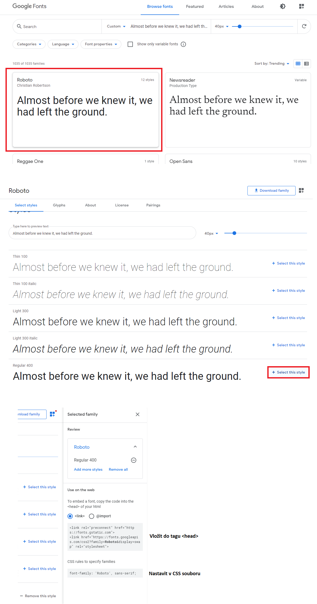

Font
Font - vzhled písma
Fonty dělíme na:
- serif - patkové písmo
- sans-serif - bezpatkové písmo
- monospace - všechno písmo má stejnou šířku
- cursive - imituje lidský rukopis
- fantasy - dekorativní písmo
Font vlastnosti:
- font-family - nastavuje rodinu písma
- font-style - lze přenastavit z hodnoty "normal" na hodnotu "italic" - text bude v kurzívě
- font-weight - tloušťka fontu - např. hodnoty normal/bold či nastavení přes čísla 300/400/500/600...
- font-size - velikost fontu - v px/em/%/vw
Většinou se nějaká rodina fontu přímo importuje do našeho webu. Seznam zdarma fontů můžeme najít například na: Google Fonts
Zde stačí vybrat písmo a následně ho importovat do našeho webu.
line-height
Vlastnost line-height specifikuje výšku řádku
line-height hodnoty:
- length - fixní výška v px, pt, cm...
- % - procentuální výška podle velikost vlastnosti font-size
- inherit - dědí z rodiče
text-align
Vlastnost text-align specifikuje horizontální zarovnání textu
text-align hodnoty:
- left - zarovnání na levou stranu
- right - zarovnání na pravou stranu
- center - zarovnání na střed
- justify - zarovnání řádků, tak aby každý řádek měl stejnou šířku - jako např. v novinách
- inherit - zdědí vlastnost text-align od rodiče
- initial - nastaví text-align na defaultní hodnotu
text-decoration
Vlastnost text-decoration specifikuje dekoraci pro text
Zároveň je zkratkou pro vlastnosti text-decoration-line, text-decoration-color a text-decoration-style
text-decoration-line hodnoty:
- none - defaultní hodnota - specifikuje, že text nebude mít žadnou pomocnou čáru
- underline - podtrhne text
- overline - vytvoří čáru nad textem
- line-through - přeškrtne text
text-decoration-color nastavuje barvu pomocných čar
text-decoration-style hodnoty:
- solid - jedna čára
- double - dvě čáry
- dotted - podtržení bude tečkované
- dashed - podtržení bude čárkované
- wavy - podtržení bude vlnkované
Editor
Pro živou ukázku je CSS a JavaScript vepsaný přímo v dokumentu - v praxi tyto soubory vždy oddělujte do externích souborů